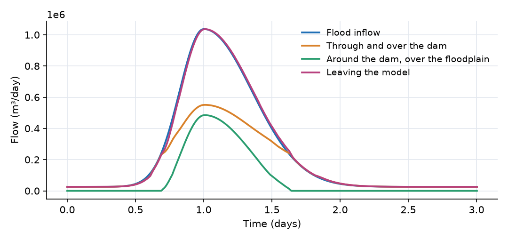
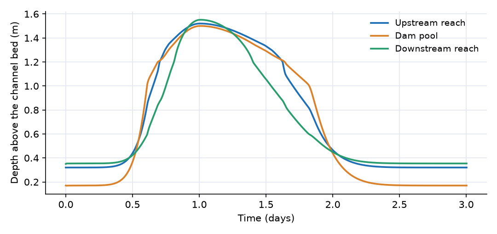
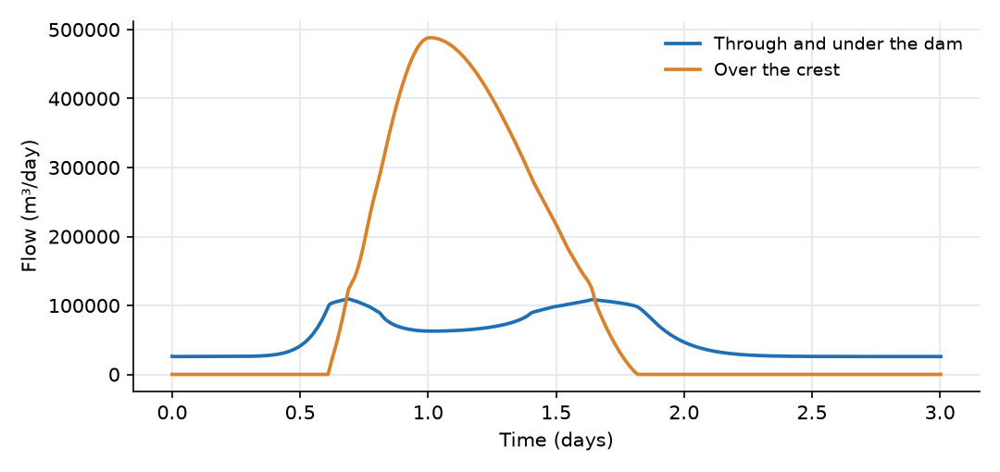

What this model represents
Leaky dams (also called leaky barriers or woody dams) are structures of logs placed across a small stream to slow floods, a common natural flood management measure. They span only the main channel. Low flows pass through gaps under and between the logs, moderate flows back up behind the structure and spill over it, and in a large flood the water rises out of the channel and flows around the structure across the floodplain.
This model represents a 600 m stretch of stream with one leaky dam, and isolates the last of these mechanisms: a separate floodplain link that carries water around the dam only when the pool behind it is above bankfull. The comparison model in the download (leaky_dam_without_bypass.ohq) is identical except that the floodplain link is removed, so that all water must pass the dam.
How it works
Compound channel reaches. Each reach is one storage cell with a compound cross-section: a power-law main channel, A = a·y^m with a = 3.65 and m = 1.5, up to the bankfull depth y_b = 1.2 m, and above that the main channel's top width (6.0 m) plus a floodplain of flat width B_f = 40 m with side slopes z_f = 10. The downstream reach has B_f = 0 (see the limitations for why). The depth y is recovered from the storage S and reach length L in closed form:
y = (S/(a·L))^(1/m) for S/L ≤ a·y_b^m y = y_b + (−(T_b + B_f) + √((T_b + B_f)² + 4·z_f·(S/L − a·y_b^m))) / (2·z_f) above bankfull
where T_b = a·m·y_b^(m−1) is the bankfull top width. The head is h = z_bed + y.
Reach-to-reach and outlet links. Upstream_Flow and Outlet_Flow use Manning's equation with the head difference over the link length:
Q = (1/n)·A·R^(2/3)·√((h_s − h_e)/L)
using the full compound flow area (taken from the upstream side) and the wetted perimeter.
Leaky dam. The dam link adds a porous through-flow and a weir overflow:
Q_through = W·K·(h_pool − h_down)/L_d · max(y_pool, H_d) Q_over = C_w·W·√(g·h_o³), h_o = max(h_pool − z_bed,pool − H_d, 0)
with W = 6 m, K = 20,000 m/day, L_d = 1 m (thickness in the flow direction), H_d = 1.0 m and C_w = 0.85. K is not a property of the wood but a lumped parameter that represents the gaps under and between the logs. It was chosen so that the base flow of 0.3 m³/s passes with a head drop of about 0.2 m.
Floodplain bypass. The bypass link carries Manning flow over the floodplain part of the dam pool's section only:
d_fp = max(h_pool − z_bed,pool − y_b, 0) A_fp = B_f·d_fp + z_f·d_fp² P_fp = B_f·min(d_fp/0.1, 1) + 2·d_fp·√(1 + z_f²) + 0.01 Q_bypass = (1/n)·A_fp·(A_fp/P_fp)^(2/3)·√((h_pool − h_down)/L)
with n the mean of the two reaches and L the mean of their lengths (200 m). Because A_fp is zero below bankfull, the bypass is switched off until the pool overtops its banks. The bed part of the perimeter is ramped in over the first 0.1 m so that the flow starts smoothly. The bypass uses the section of its upstream block, so it must be drawn in the downstream direction.
Sign convention and units. All links are positive in the downstream direction. Flows are in m³/day (1 m³/s = 86,400 m³/day), depths in m, time in days.
What to look for in the results
- Three regimes at the dam. Until t = 0.6 day all flow passes through the dam and the pool stays below the 1.0 m crest. From t = 0.6 day water also spills over the crest. At t = 0.68 day, with 2.7 m³/s arriving, the pool reaches its bankfull depth of 1.2 m and the floodplain bypass switches on.
- Bypass share. At the peak (t = 1.0 day) the dam passes 6.4 m³/s (0.7 m³/s through, 5.7 m³/s over) and the floodplain carries 5.6 m³/s. Over the whole event the bypass carries 34% of the flood volume. It switches off again at t = 1.64 day, when the pool drops back below bankfull.
- Check of the bypass flow at the peak. The pool is 0.30 m above bankfull, so A_fp = 40 × 0.30 + 10 × 0.30² = 12.9 m² and P_fp = 46.0 m. With a head difference of 0.35 m over 200 m, Manning's equation gives (1/0.04) × 12.9 × 0.280^(2/3) × √0.00175 = 5.8 m³/s, within 3% of the 5.6 m³/s in the output.
- Effect on flood levels. In the comparison model without the bypass, the pool rises to 1.76 m (0.26 m higher) and the upstream reach to 1.60 m (0.08 m higher), because the whole flood has to pass over the 6 m wide crest. The downstream reach peaks at the same 1.55 m in both models.
- Little peak attenuation. The three reaches store too little water to delay or reduce the flood, so the outflow peak equals the inflow peak. The dam and the bypass change where the water goes and how high it rises, not how much leaves.
Assumptions and limitations
- The floodplain flow path is a single link with the same length and roughness as the channel reaches. A real bypass path may be longer, rougher or partly blocked.
- Each reach is a single storage cell. Water levels within a reach, and the shape of the backwater behind the dam, are not resolved.
- The through-dam flow is a linear (Darcy-type) relation with a lumped conductivity, a simplification of flow through gaps. The plugin multiplies by the larger of the pool depth and the dam height, so at low pool levels the flow area is the full dam height. This was not changed here; check it against measurements before using the dam link for low-flow studies.
- The weir equation has no submergence correction and allows no reverse flow over the dam.
- The main channel and the floodplain share one Manning coefficient within each reach, and the reach links use a single hydraulic radius for the whole compound section. When the water spreads onto a wide flat floodplain, the wetted perimeter grows much faster than the area, so the computed flow briefly drops as the depth passes bankfull. This is the known weakness of the single-section method for compound channels. It produced spurious flow spikes at the outlet when the downstream reach had a 40 m flat floodplain, which is why that reach has none here. The bypass link itself is not affected, because it treats the floodplain on its own.
- The hydrograph is synthetic.
Model diagram
Hover a block or link to see its name and type. Arrows show the positive flow direction.
Components
Click a component to see every property set in the model file, with units and meaning.
Blocks 4
Storage compartments: each holds water (and dissolved or particulate mass) and has a state that evolves in time.
Upstream_ReachCompound Channel Segment · compound_channel200 m of stream above the dam pool, bed at 1.2 m. Receives the flood hydrograph. Same compound cross-section as the other two reaches.
Compound Channel Segment: Channel segment with a power-law main channel, A = channel_coeff*y^channel_exponent for depth y <= bank_depth (exponent 1 = rectangle, 2 = triangle/parabola-like), and above bank_depth vertical channel walls plus a floodplain of flat width floodplain_width and side slope floodplain_side_slope. Wetted perimeter: main channel P = T(y) + 2y with top width T = channel_coeff*channel_exponent*y^(channel_exponent-1); above bank the floodplain bottom (ramped in over the first 0.1 m) and sloped sides are added. A pool_depth (dead storage below the zero-flow control) can be set: Storage and depth include it, the flowing area exposed as 'area' excludes it, and obs_depth = depth - pool_depth. Depth is obtained from Storage by inverting the area relation in closed form. Exposes area, perimeter, head, ManningCoeff and length, so it connects with the existing channel links (Trapezoidal_Channel_link, channel2fixed, Reach_link, groundwater_to_stream, pond outlets). Implementation note: all state-dependent quantities are written inline in terms of Storage (depth) and depth (area, perimeter, top width) only; chains of named helper expressions were found to be evaluated with stale values. Requires the Expression::argument_values fix for _min/_max with two compound arguments.
| Property | Value | Unit | Meaning |
|---|---|---|---|
| Main-channel area coefficient a (A = a*y^m) | 3.65 | Coefficient a of the main-channel area-depth relation A = a*y^m (SI: m^(2-m)). | |
| Main-channel area exponent m (A = a*y^m) | 1.5 | Exponent m of the main-channel area-depth relation; 1 = rectangular, 2 = triangular. | |
| Bank-full (maximum) depth of the main channel | 1.2 | m | |
| Floodplain flat width (in addition to the main-channel top width) | 40 | m | |
| Floodplain/valley side slope (horizontal:vertical) | 10 | ||
| Pool (dead-storage) depth below the zero-flow control | 0 | m | Depth of water retained at zero flow (pool behind the riffle/control). Storage and depth include the pool; the flowing area used by the connectors excludes it. Must not exceed bank_depth. |
| Manning's Roughness Coefficient | 0.04 | ||
| Bottom Elevation | 1.2 | m | |
| Segment length | 200 | m | |
| Initial Water Depth | 0.32 | m | Depth of water above the channel invert (main channel + floodplain). The value entered is the initial water depth; the initial storage is computed from it with the compound section. If depth is initially unknown, it is estimated based on storage. |
| Inflow time series | flood_hydrograph.csv | m^3/day |
Dam_PoolCompound Channel Segment · compound_channelThe 200 m reach directly upstream of the leaky dam, bed at 0.8 m. Main channel A = 3.65·y^1.5 (6.0 m wide and 4.8 m² in area at the bankfull depth of 1.2 m), with a 40 m wide floodplain and valley sides at 10 horizontal to 1 vertical above that. Manning n = 0.04.
Compound Channel Segment: Channel segment with a power-law main channel, A = channel_coeff*y^channel_exponent for depth y <= bank_depth (exponent 1 = rectangle, 2 = triangle/parabola-like), and above bank_depth vertical channel walls plus a floodplain of flat width floodplain_width and side slope floodplain_side_slope. Wetted perimeter: main channel P = T(y) + 2y with top width T = channel_coeff*channel_exponent*y^(channel_exponent-1); above bank the floodplain bottom (ramped in over the first 0.1 m) and sloped sides are added. A pool_depth (dead storage below the zero-flow control) can be set: Storage and depth include it, the flowing area exposed as 'area' excludes it, and obs_depth = depth - pool_depth. Depth is obtained from Storage by inverting the area relation in closed form. Exposes area, perimeter, head, ManningCoeff and length, so it connects with the existing channel links (Trapezoidal_Channel_link, channel2fixed, Reach_link, groundwater_to_stream, pond outlets). Implementation note: all state-dependent quantities are written inline in terms of Storage (depth) and depth (area, perimeter, top width) only; chains of named helper expressions were found to be evaluated with stale values. Requires the Expression::argument_values fix for _min/_max with two compound arguments.
| Property | Value | Unit | Meaning |
|---|---|---|---|
| Main-channel area coefficient a (A = a*y^m) | 3.65 | Coefficient a of the main-channel area-depth relation A = a*y^m (SI: m^(2-m)). | |
| Main-channel area exponent m (A = a*y^m) | 1.5 | Exponent m of the main-channel area-depth relation; 1 = rectangular, 2 = triangular. | |
| Bank-full (maximum) depth of the main channel | 1.2 | m | |
| Floodplain flat width (in addition to the main-channel top width) | 40 | m | |
| Floodplain/valley side slope (horizontal:vertical) | 10 | ||
| Pool (dead-storage) depth below the zero-flow control | 0 | m | Depth of water retained at zero flow (pool behind the riffle/control). Storage and depth include the pool; the flowing area used by the connectors excludes it. Must not exceed bank_depth. |
| Manning's Roughness Coefficient | 0.04 | ||
| Bottom Elevation | 0.8 | m | |
| Segment length | 200 | m | |
| Initial Water Depth | 0.17 | m | Depth of water above the channel invert (main channel + floodplain). The value entered is the initial water depth; the initial storage is computed from it with the compound section. If depth is initially unknown, it is estimated based on storage. |
Downstream_ReachCompound Channel Segment · compound_channel200 m of stream below the dam, bed at 0.4 m. Same main channel, but the valley narrows below the dam, so above bankfull it has only the 10:1 valley sides and no flat floodplain. Receives both the flow past the dam and the floodplain flow.
Compound Channel Segment: Channel segment with a power-law main channel, A = channel_coeff*y^channel_exponent for depth y <= bank_depth (exponent 1 = rectangle, 2 = triangle/parabola-like), and above bank_depth vertical channel walls plus a floodplain of flat width floodplain_width and side slope floodplain_side_slope. Wetted perimeter: main channel P = T(y) + 2y with top width T = channel_coeff*channel_exponent*y^(channel_exponent-1); above bank the floodplain bottom (ramped in over the first 0.1 m) and sloped sides are added. A pool_depth (dead storage below the zero-flow control) can be set: Storage and depth include it, the flowing area exposed as 'area' excludes it, and obs_depth = depth - pool_depth. Depth is obtained from Storage by inverting the area relation in closed form. Exposes area, perimeter, head, ManningCoeff and length, so it connects with the existing channel links (Trapezoidal_Channel_link, channel2fixed, Reach_link, groundwater_to_stream, pond outlets). Implementation note: all state-dependent quantities are written inline in terms of Storage (depth) and depth (area, perimeter, top width) only; chains of named helper expressions were found to be evaluated with stale values. Requires the Expression::argument_values fix for _min/_max with two compound arguments.
| Property | Value | Unit | Meaning |
|---|---|---|---|
| Main-channel area coefficient a (A = a*y^m) | 3.65 | Coefficient a of the main-channel area-depth relation A = a*y^m (SI: m^(2-m)). | |
| Main-channel area exponent m (A = a*y^m) | 1.5 | Exponent m of the main-channel area-depth relation; 1 = rectangular, 2 = triangular. | |
| Bank-full (maximum) depth of the main channel | 1.2 | m | |
| Floodplain flat width (in addition to the main-channel top width) | 0 | m | |
| Floodplain/valley side slope (horizontal:vertical) | 10 | ||
| Pool (dead-storage) depth below the zero-flow control | 0 | m | Depth of water retained at zero flow (pool behind the riffle/control). Storage and depth include the pool; the flowing area used by the connectors excludes it. Must not exceed bank_depth. |
| Manning's Roughness Coefficient | 0.04 | ||
| Bottom Elevation | 0.4 | m | |
| Segment length | 200 | m | |
| Initial Water Depth | 0.35 | m | Depth of water above the channel invert (main channel + floodplain). The value entered is the initial water depth; the initial storage is computed from it with the compound section. If depth is initially unknown, it is estimated based on storage. |
Outletfixed_headFixed water level of 0.3 m at the downstream end of the model.
fixed_head: Fixed-head boundary
| Property | Value | Unit | Meaning |
|---|---|---|---|
| Head | 0.3 | m | |
| Initial Storage | 100000 | m3 |
Links 4
Connections that move water (and the mass it carries) between blocks.
Upstream_FlowCompound_Channel_link · compound_channelManning flow from the upstream reach into the dam pool, through the full compound section.
Compound_Channel_link: Manning (diffusive-wave) connector between channel segments; identical to Trapezoidal_Channel_link (upwind flowing area, average wetted perimeter and roughness). Works with Compound Channel Segment and Trapezoidal Channel Segment.
Leaky_DamLeaky Dam · open_channelAn in-channel woody structure, 1.0 m high and 6 m wide (the main-channel width). Water passes through and under it (a lumped porous flow, conductivity 20,000 m/day) and over its crest as a weir (coefficient 0.85).
Leaky Dam: Leaky Dam
| Property | Value | Unit | Meaning |
|---|---|---|---|
| Width | 6 | m | |
| Dam Height | 1.0 | m | |
| Hydraulic Conductivity | 20000 | m/day | |
| Dam Length in the flow direction | 1 | m | |
| Weir Coefficient | 0.85 |
Floodplain_BypassFloodplain_bypass_link · floodplain_bypassManning flow across the floodplain around the dam. Active only when the dam pool is above its bankfull depth of 1.2 m, and uses only the floodplain part of the section.
Floodplain_bypass_link: Manning flow over the floodplain part of the upstream Compound Channel Segment only: depth above bank_depth, outside the main-channel width (area = floodplain_width*d + floodplain_side_slope*d^2, d = head - bottom_elevation - bank_depth). Place it in parallel with an in-channel structure such as 'Leaky Dam with pipes', whose weir spans only the channel: above bankfull, water goes around the structure across the floodplain. Uses the upstream (source) segment's section, so connect it in the downstream direction.
Outlet_Flowchannel2fixed · open_channelManning flow from the downstream reach to the outlet level.
channel2fixed: Link from a channel segment to fixed head boundary
Input files
flood_hydrograph.csv | Inflow to the upstream reach: a base flow of 0.3 m³/s with a flood peaking at 12 m³/s at t = 1.0 day, rising over about 0.5 day and receding over about 1 day. Time in days, flow in m³/day. Synthetic. |
leaky_dam_without_bypass.ohq | The same model with the Floodplain_Bypass link removed, for comparison. Writes |
Simulation settings
| Start time | 0 |
| End time | 3 |
| Initial time step | 0.001 |
| Write interval (steps) | 1 |
Results
Produced by running the downloaded model unchanged.


